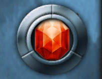
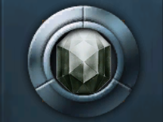
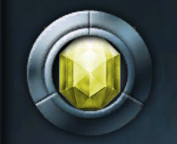

Πολύτιμοι Λίθοι
Εδώ θα βρείτε λεπτομέρειες για τους πολύτιμους λίθους, ρούνους και κοσμήματα στο Drakensang Online.
Πέτρες
Εδώ θα βρείτε πληροφορίες για τις επιθετικές και αμυντικές πέτρες.
Επιθετικές Πέτρες

Πέτρα της Ζημιάς
Πέτρα της Κρίσιμης Ζημιάς
Πέτρα της Επιτάχυνσης ΕπίθεσηςΑμυντικές Πέτρες
 Πέτρα της Πανοπλίας
Πέτρα της Πανοπλίας
 Πέτρα της Αντοχής
Πέτρα της Αντοχής
 Εκλεπτυσμένος Αυτοκρατορικός Αμέθυστος
Εκλεπτυσμένος Αυτοκρατορικός Αμέθυστος
 Εκλεπτυσμένος Αυτοκρατορικός Ροδολίτης
Εκλεπτυσμένος Αυτοκρατορικός Ροδολίτης
Ρούνοι
Εδώ θα βρείτε όλους τους ρούνους που είναι απαραίτητοι για κάθε παίκτη.
 Ρούνος της Ζημιάς
Ρούνος της Ζημιάς
 Ρούνος της Ταχύτητας Επίθεσης
Ρούνος της Ταχύτητας Επίθεσης
Κοσμήματα
Πέτρες που δίνουν επιπλέον στατιστικά, απαραίτητα για την ενίσχυση του παίκτη.
 Κόσμημα της Υγείας
Κόσμημα της Υγείας
 Κόσμημα της Πανοπλίας
Κόσμημα της Πανοπλίας